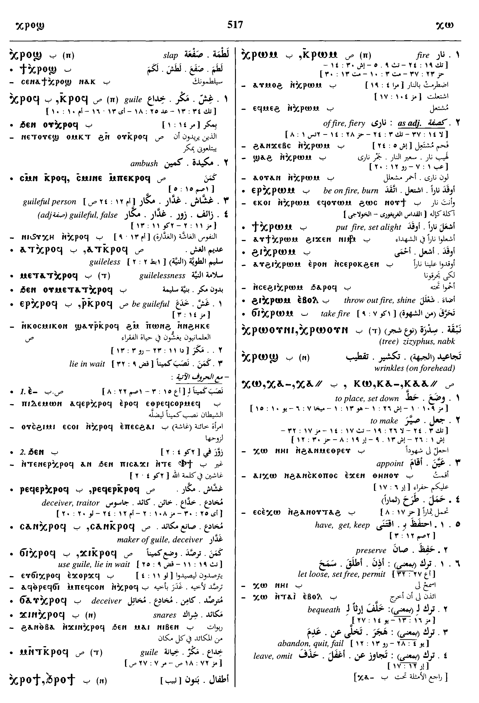
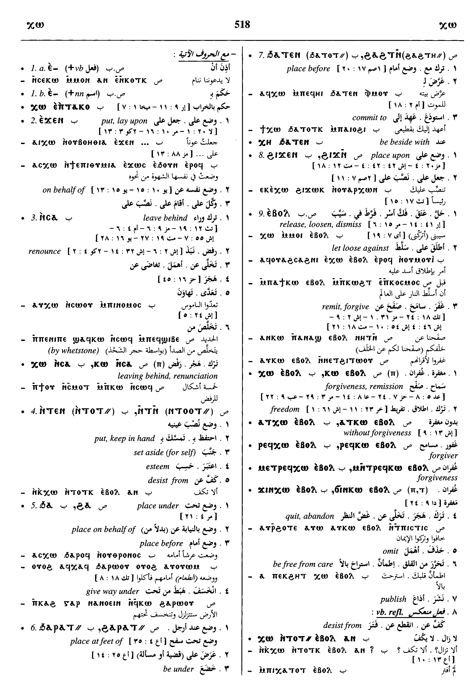
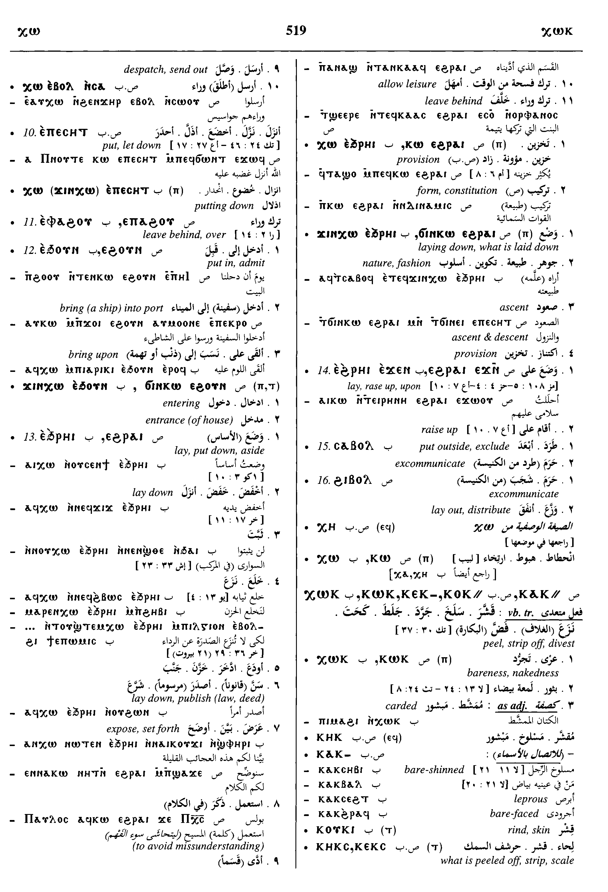
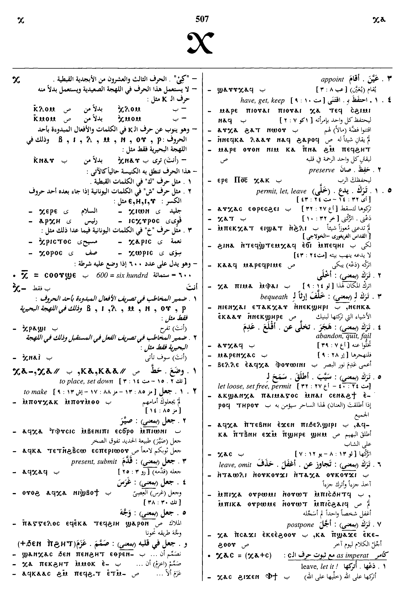
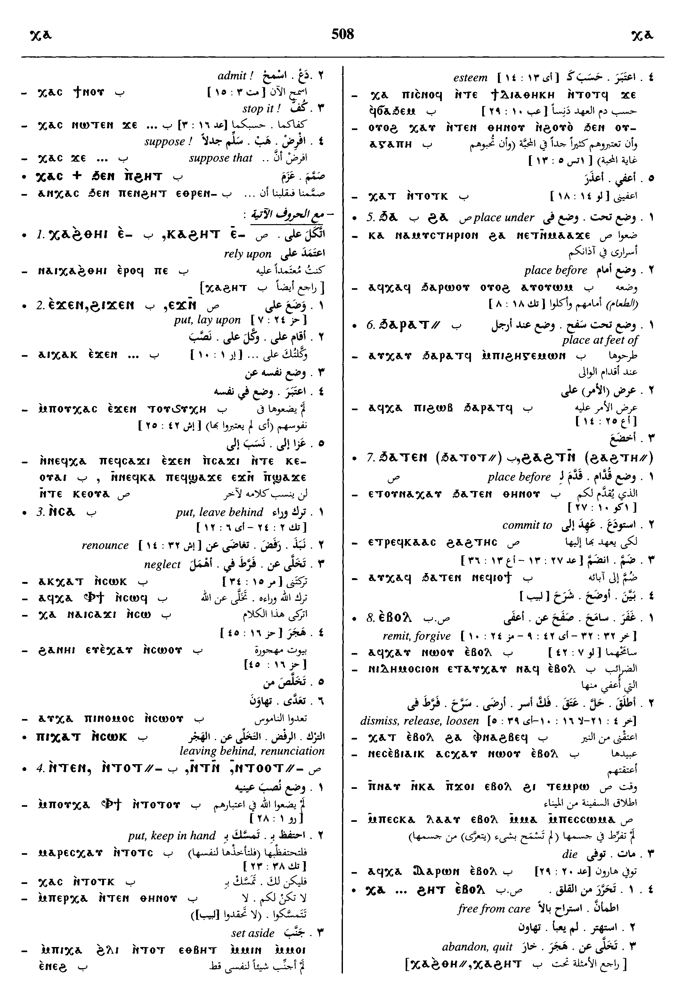
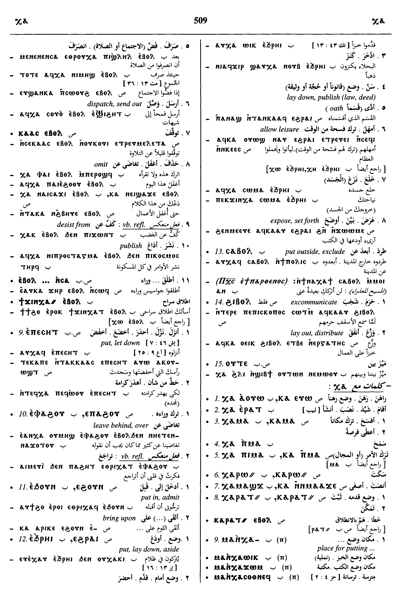
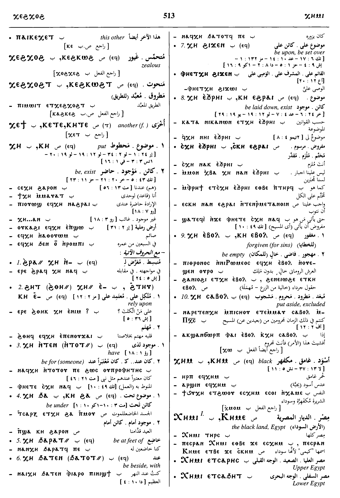

(verb)
place, appoint, set down, make [τιθεναι, τασσειν, ισταναι]
with dative, have, get, keep
preserve
permit, set free [ανιεναι, αφιεναι]
qual: be loose, limp, unrestrained, permitted
as imperative, admit, concede, suppose
bequeath
quit, abandon, fail [αφιεναι, απωθειν]
leave, omit
qual + prep or advb, be, exist, lie [κεισθαι]
in later SF letters go to, reach, lit enter, qual be in
auxil (causative) use
with dative, have, get, keep
preserve
permit, set free [ανιεναι, αφιεναι]
qual: be loose, limp, unrestrained, permitted
as imperative, admit, concede, suppose
bequeath
quit, abandon, fail [αφιεναι, απωθειν]
leave, omit
qual + prep or advb, be, exist, lie [κεισθαι]
in later SF letters go to, reach, lit enter, qual be in
auxil (causative) use
place; appoint; set down;
make; (with dative) have, get, keep; preserve; permit;
set free; loose; limp;
unrestrained; permitted; (as
imperative) admit, concede, suppose; bequeath; quit;
abandon; fail; leave;
omit; be, exist; lie;
(in later SF letters) go to, reach,
(lit) enter, (qual) be in; (auxil
(causitive) use)
| ⲙⲁ ⲛⲕⲁ-, ⲙⲁ ⲛⲭⲁ- | place for putting [βελοστασις]439 | Crum: 95b | |||||||
| ϭⲓⲛⲕⲱ, ϫⲓⲛⲭⲱ | (noun)
m B, f S, placing, laying down440 |
||||||||
| (S, B) ― | (noun male)
loosening, slackness441 |
||||||||
| With following preposition:4225 | Crum: 96a | ||||||||
| (S, A, B, F) ⲕⲱ ⲉ- | rely upon, with ϩⲏⲧ
appoint, doom, with ⲧⲁⲕⲟ4226 |
||||||||
| (S, B) ― ⲉϫⲛ- | put, lay upon4227 | ||||||||
| (S, A, L, B, F) ― ⲛⲥⲁ- | put, leave behind, renounce
[ανιεναι, αφιεναι, απολειπειν, απωθειν, αποποιειν]
as nn, leaving behind4228 |
||||||||
| (S, A, B) ― ⲛⲧⲛ- | put, keep in hand, entrust to,
esteem [εχειν, ηγεισθαι]
qual: be for someone4229 |
||||||||
| (S, L, B) ― ϩⲁ-, ― ϧⲁ- | place under, on behalf of,
renounce for
qual: be under4230 |
||||||||
| (S, A, B) ― ϩⲁⲣⲛ-, ― ϧⲁⲣⲉⲛ- | place before (of food)4231 | Crum: 96b | |||||||
| (S, B) ― ϩⲁⲣⲁⲧ⸗, ― ϧⲁⲣⲁⲧ⸗ | place at feet of, before4232 | ||||||||
| (S, A, B, F) ― ϩⲁϩⲧⲛ-, ― ϧⲁⲧⲉⲛ- | place before, commit to
qual: be beside, with4233 |
||||||||
| ― ϩⲓϫⲛ- | place, let toose upon4234 | ||||||||
| With following adverb:4235 | |||||||||
| (S, A, L, B, F) ― ⲉⲃⲟⲗ | (meanings often as ⲕⲱ)
tr: ― release, loosen, dismiss [απολυειν, αποστελλειν] ― of liturgy ― let loose against c ⲉ- ― dispatch, send out ― remit, forgive with dat of person [αφιεναι, χαριζειν, ιλασκεσθαι] quit, abandon, qual be empty [καταλειπειν] ― omit ― refl, desist from ― publish ― ⲕ. ⲉⲃ. ⲛⲥⲁ- S, release from intr: ― become loose, dissolved [εκλυεσθαι] ― be at ease ― be left desolate [καταλειπεσθαι] ― forgive [ανιεναι, αφιεναι]4236 |
||||||||
| (S, A, B) ― ⲉⲃⲟⲗ | (noun male)
freedom, remission [αφεσις, αποστολη, ιλασμος]4237 |
Crum: 97b | |||||||
| (B) ⲁⲧⲭⲱ ⲉⲃⲟⲗ | (adjective)
without forgiveness4238 |
||||||||
| (S) ⲙⲁ ⲛⲕⲱ ⲉⲃⲟⲗ | place of forgiveness, mercy-seat [ιλαστηριον]4239 | ||||||||
| (S, B) ⲣⲉϥⲕⲱ ⲉⲃⲟⲗ | forgiver4240 | ||||||||
| (S, B) ⲙⲛⲧⲣⲉϥⲕⲱ ⲉⲃⲟⲗ, ⲙⲉⲧⲣⲉϥⲕⲱ ⲉⲃⲟⲗ, ⲙⲉⲧⲣⲉϥⲭⲱ ⲉⲃⲟⲗ | forgiveness4241 | ||||||||
| (S, B) ϭⲓⲛⲕⲱ ⲉⲃⲟⲗ, ϫⲓⲛⲕⲱ ⲉⲃⲟⲗ | (noun male/female)
m f B, f S, forgiveness [ιλασμος]4242 |
||||||||
| (S, B) ― ⲉⲡⲉⲥⲏⲧ | put, let down [καθαιρειν, χαλαν, αφιεναι]4243 | ||||||||
| (S, A, B) ― ⲉⲡⲁϩⲟⲩ, ― ⲉⲫⲁϩⲟⲩ | leave behind, over4244 | ||||||||
| (S, B, F) ― ⲉϩⲟⲩⲛ, ― ⲉϧⲟⲩⲛ | put in, admit
bring into port as nn f4245 |
||||||||
| (S) ϭⲓⲛⲕⲱ ⲉϩⲟⲩⲛ | entrance of house4246 | Crum: 98a | |||||||
| (S, A, L, B, F) ― ⲉϩⲣⲁⲓ, ― ⲁϩⲣⲁⲓ, ― ⲉϧⲣⲁⲓ | put, lay down, aside,
literal & metaph
lay down, publish (law, deed) leave behind lay down, abandon qual: be laid down, exist [κεισθαι]4247 |
||||||||
| ― ⲉϩⲣⲁⲓ | laying down, provision4248 | ||||||||
| (S, B) ϭⲓⲛⲕⲱ ⲉϩⲣⲁⲓ, ϫⲓⲛⲭⲱ ⲉϩⲣⲁⲓ, ϫⲓⲛⲭⲱ ⲉϧⲣⲁⲓ | f S, m B, laying down, what is laid down, nature, fashion4249 | Crum: 98b | |||||||
| (S) ― ⲉϩⲣⲁⲓ | go up4250 | ||||||||
| (S) ⲕⲱ. {ⲉϩⲣⲁⲓ} ⲉϫⲛ- | where = B ⲉϧⲣⲏⲓ lay, raise up upon4251 | ||||||||
| ― ⲥⲁⲃⲟⲗ | mostly B, put outside, exclude4252 | ||||||||
| (S) ― ϩⲓⲃⲟⲗ | as last, excomunicate
lay out, distribute4253 |
||||||||
See also:
| view | (S, B) ⲛⲟⲩⲧϥ, ⲛⲟⲩϥⲧ (S, B) ⲛⲉⲧϥ-, ⲛⲉⲧⲃ- (B) ⲛⲟⲩϥⲧ- (S) ⲛⲁϥⲧ- (F) ⲛⲁⲧⲉϥ- (B) ⲛⲟϥⲧ⸗ (S) ⲛⲟⲧϥ†, ⲛⲟⲧⲃ† | (verb) tr: loosen, dissolve,
settle, make terms for
― esp loosen mouth, face in smiles intr: be relaxed, released [απαλλασειν, διαλυεσθαι] as nn, relaxation1208 |
| view | (S, A, B, F) ⲃⲱϣ (S) ⲃⲉϣ- (B, F) ⲃⲁϣ- (S) ⲃⲟϣ⸗, ⲃⲁϣ⸗ (B, F) ⲃⲁϣ⸗ (S, B) ⲃⲏϣ† (S) p c ⲃⲁϣ- (?) | (verb) intr: be loosened,
undone
be naked [γυμνος ειναι] tr: strip, divest [εκδυειν] flay, despoil loosen, unfasten release, give leave [ανιεναι, εκλυεσθαι] forsake [ανιεναι]614 |
| view | (S, L, B, F, O) ⲟⲩⲱ (A) ⲟⲩⲟⲩ (B) ⲁⲟⲩⲱ (B) ⲟⲩⲏⲟⲩⲧ† | (verb) intr: cease, stay
[παυεσθαι, εκλειπειν]
tr: S, finish [τελειν]328 |
| view | (S, A, L, B, F, O) ⲃⲱⲗ, ⲃⲉⲗ-, ⲃⲟⲗ⸗, (ⲃⲁⲗ⸗), ⲃⲏⲗ† (S, A, L, B, F, O) p c ⲃⲁⲗ- | (verb) loosen, untie, mostly
tr [λυειν]
melt unstring interpret, explain scriptures, dreams &c [διερμηνευειν] be softened, persuaded weaken, make faint nullify order, deed dissolve, destroy pay54 |
| view | (S, L, B) ϣⲱⲗ (A) ⳉⲱⲗ (F) ϣⲉⲗ- (S) ϣⲟⲗ⸗ (S, B) ϣⲏⲗ† | (verb) intr: flow c
ⲉ- [διαχεειν]
tr: loosen, dissolve, paralyse qual: c ⲉⲃⲟⲗ, loosened, paralysed1889 |

Dawoud: 517b-519b,
507a-510a, 513a-513b

517

518

519

507

508

509

510

513